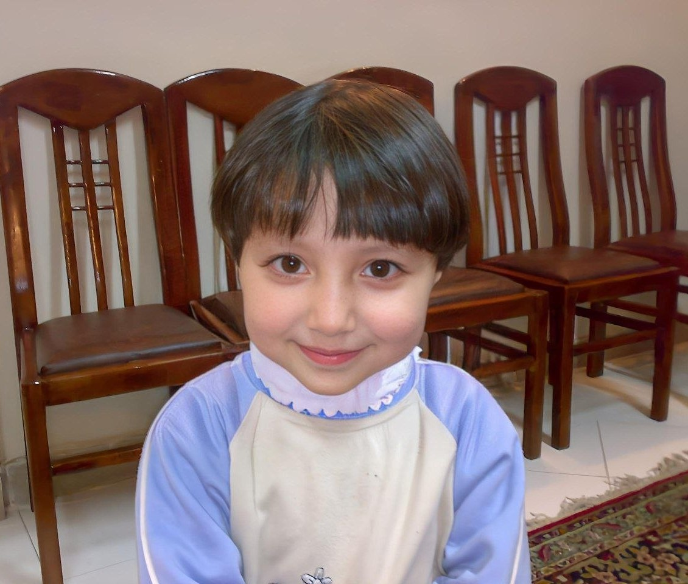

Vue.js & Frontend Ecosystem
Expanding from Vanilla JS into component-driven development with Vue 3 and modern UI tooling.
In ProgressWELCOME TO
Aman Aldaher
Information Technology Engineering Student & Frontend Developer
Hello, I'm
Building interactive, responsive web experiences with Vanilla JavaScript, exploring modern frameworks, and diving deep into software development.

Dream
Shine
Smile
Get to know me
I'm Aman, a 2nd-year Information Technology Engineering student at the Syrian Virtual University (SVU).
My core focus is on frontend web development, specializing in building interactive and lightweight web applications using Vanilla JavaScript, HTML5, and CSS3 without relying blindly on external frameworks.
Alongside web development, I have a strong foundation in Object-Oriented Programming and algorithms with C++, C#, and Python, and I actively explore APIs, cybersecurity foundations, and modern UI engineering.
Mastering core JavaScript, DOM manipulation, and CSS animations before jumping into heavy tools.
Studying algorithms, data structures, and computer science foundations at SVU.
Translating trigonometry and real-world API data into smooth, interactive interfaces.
What I work with
Click on any skill to see my hands-on experience with it.
Growth Roadmap
Expanding from Vanilla JS into component-driven development with Vue 3 and modern UI tooling.
In ProgressDiving deeper into RESTful APIs, environments, pre-request scripts, and mock servers.
ExploringHands-on practice with TryHackMe, Hack The Box, and foundational networking security.
ContinuousAdvancing problem-solving skills and algorithmic efficiency as part of Informatics Engineering.
AcademicWhat I've built
An interactive web project built with Vanilla JavaScript using trigonometric calculations (`Math.atan2`) to dynamically track cursor and touch movements with smooth pupil animations.
A bilingual interactive memory game featuring smooth 3D card-flip animations, interactive avatar reactions, simulated authentication flow, and LocalStorage state persistence for best scores.
Live weather forecasting combined with astronomical moon phase data retrieved directly from NASA APIs, presenting complex space information in an intuitive dashboard.
Calculates accurate prayer times based on geolocation, featuring a live countdown timer to the next upcoming prayer with intuitive audio/visual cues.
A clean, botanical sage-green themed task manager with nested subtasks, real-time dynamic progress calculation, and persistent state management without external dependencies.
A lightweight, responsive quiz web application deployed on GitHub Pages with instant feedback, score calculation, and neat micro-animations.
A fully responsive, modern landing page designed for a non-profit organization, emphasizing clean visual hierarchy, accessibility, and smooth interaction.
An interactive Telegram bot built to showcase my technical portfolio, experience, and CV directly inside Telegram with intuitive commands.
Academic Journey
Syrian Virtual University (SVU - الجامعة الافتراضية السورية)
Focusing on Software Engineering, Object-Oriented Programming, and Data Structures.Coursera, TryHackMe & Technical Coursework
Deepening knowledge in Web Standards, IT Support, and Security foundations.Open source & projects
Live demos, code architecture, and interactive web assignments hosted on GitHub.
Visit GitHub Profile →Let's connect
Have a project idea, collaboration, or internship opportunity? Feel free to reach out!